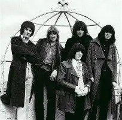

Biografía
Deep Purple, formada en 1968 en Hertford (Inglaterra), es pionera del hard rock y el heavy metal. Con himnos como “Smoke on the Water”, su sonido potente y los solos virtuosos marcaron época. Pasaron por varios cambios de formación, siendo la “Mark II” la más reconocida.
Información detallada
- Fundadores: Ritchie Blackmore, Ian Gillan, Roger Glover, Jon Lord, Ian Paice
- Origen: Hertford, Inglaterra (1968)
- Género: Hard rock, heavy metal
- Álbumes destacados: Deep Purple in Rock, Machine Head, Burn, Stormbringer
